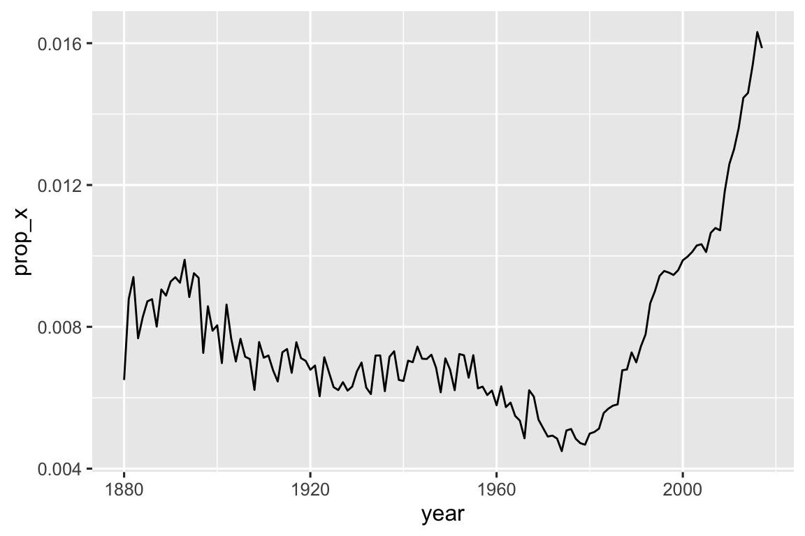

library(tidyverse)
library(babynames)15 正则表达式
15.1 引言
在 章节 14 部分，你学习了一系列用于处理字符串的有用函数。本 章将重点介绍使用正则表达式的函数，正则表达式（regular expression）是一种简洁而强大的语言，用于描述字符串中的模式。术 语“正则表达式”有点长，所以大多数人将其缩写为“regex”1或“regexp”。
本章首先介绍正则表达式的基础知识以及数据分析中最有用的stringr函数。然 后，我们将扩展你对模式的了解，并介绍七个重要的新主题（转义、锚定、字符类、简写类、量词、优先级和分组）。接 下来，我们将讨论stringr函数可以处理的其他类型的模式，以及允许你调整正则表达式操作的各种“标志”。最 后，我们将概述tidyverse和base R中可能会使用正则表达式的其他地方。
15.1.1 必要条件
在本章中，我们将使用tidyverse的核心成员stringr和tidyr中的正则表达式函数，以及babynames包中的数据。
在本章中，我们将使用非常简单的内联示例的混合方式，以便你能够理解基本概念，还会使用babynames数据集中的数据，以及来自stringr的三个字符向量：
fruit包含了80种水果的名称。words包含了980个常见的英语单词。sentences包含了720个短句。
15.2 模式的基础
我们将使用str_view()来学习正则表达式模式是如何工作的。在 上一章中，我们使用str_view()来更好地理解字符串与其输出表示之间的区别，现在我们将使用它的第二个参数，即正则表达式。当 提供这个参数时，str_view()将仅显示字符串向量中匹配的部分，将每个匹配项用< >括起来，并在可能的情况下将匹配项以蓝色高亮显示。
最简单的模式由字母和数字组成，它们会精确匹配这些字符：
str_view(fruit, "berry")
#> [6] │ bil<berry>
#> [7] │ black<berry>
#> [10] │ blue<berry>
#> [11] │ boysen<berry>
#> [19] │ cloud<berry>
#> [21] │ cran<berry>
#> ... and 8 more字母和数字进行精确匹配，被称为字面字符（literal characters）。大 多数标点符号字符，如.、+、*、[、]和? 具有特殊含义2，被称为元字符（metacharacters）。 例如，.将匹配任何字符3，所以 "a." 将匹配任何包含 “a” 后面跟着另一个字符的字符串 ：
str_view(c("a", "ab", "ae", "bd", "ea", "eab"), "a.")
#> [2] │ <ab>
#> [3] │ <ae>
#> [6] │ e<ab>或者，我们可以找到所有包含“a”，后跟三个字母，再后跟“e”的水果：
str_view(fruit, "a...e")
#> [1] │ <apple>
#> [7] │ bl<ackbe>rry
#> [48] │ mand<arine>
#> [51] │ nect<arine>
#> [62] │ pine<apple>
#> [64] │ pomegr<anate>
#> ... and 2 more量词（Quantifiers） 控制模式可以匹配的次数：
?使得一个模式变为可选的（即它匹配0次或1次）+允许一个模式重复（即它至少匹配一次）*允许一个模式变为可选的或重复（即它匹配任意次数，包括0次）
# ab? matches an "a", optionally followed by a "b".
str_view(c("a", "ab", "abb"), "ab?")
#> [1] │ <a>
#> [2] │ <ab>
#> [3] │ <ab>b
# ab+ matches an "a", followed by at least one "b".
str_view(c("a", "ab", "abb"), "ab+")
#> [2] │ <ab>
#> [3] │ <abb>
# ab* matches an "a", followed by any number of "b"s.
str_view(c("a", "ab", "abb"), "ab*")
#> [1] │ <a>
#> [2] │ <ab>
#> [3] │ <abb>字符类（Character classes）由[]定义，允许你匹配一组字符，例如，[abcd]匹配“a”、“b”、“c”或“d”。你 也可以通过在开头使用^来反转匹配：[^abcd]匹配除“a”、“b”、“c”或“d”之外的任何字符。我 们可以利用这个思路来查找被元音字母包围的“x”，或者被辅音字母包围的“y”。
str_view(words, "[aeiou]x[aeiou]")
#> [284] │ <exa>ct
#> [285] │ <exa>mple
#> [288] │ <exe>rcise
#> [289] │ <exi>st
str_view(words, "[^aeiou]y[^aeiou]")
#> [836] │ <sys>tem
#> [901] │ <typ>e你可以使用分隔符（alternation）| 在一个或多个备选模式中进行选择。例 如，下面的模式会查找包含“apple”、“melon”或“nut”，或者一个重复元音字母的水果。
str_view(fruit, "apple|melon|nut")
#> [1] │ <apple>
#> [13] │ canary <melon>
#> [20] │ coco<nut>
#> [52] │ <nut>
#> [62] │ pine<apple>
#> [72] │ rock <melon>
#> ... and 1 more
str_view(fruit, "aa|ee|ii|oo|uu")
#> [9] │ bl<oo>d orange
#> [33] │ g<oo>seberry
#> [47] │ lych<ee>
#> [66] │ purple mangost<ee>n正则表达式非常紧凑，使用了大量标点符号字符，所以一开始可能会显得让人难以理解和难以阅读。不 过不用担心，随着不断实践，你会越来越熟练，简单的模式很快就会变得驾轻就熟。让 我们通过练习一些有用的stringr函数来开始这个过程吧。
15.3 关键函数
既然你已经掌握了正则表达式的基础知识，接下来就让我们使用stringr和tidyr函数来应用它们吧。在 以下部分，你将学习如何检测匹配项是否存在，如何计算匹配项的数量，如何用固定文本替换匹配项，以及如何使用模式来提取文本。
15.3.1 检测匹配项
str_detect() 函数返回一个逻辑向量，如果模式与字符向量中的某个元素匹配，则返回TRUE，否则返回FALSE：
str_detect(c("a", "b", "c"), "[aeiou]")
#> [1] TRUE FALSE FALSE由于str_detect()返回一个与初始向量长度相同的逻辑向量，因此能与filter()搭配很好。例 如，这段代码用于查找所有包含小写字母”x”的最受欢迎的名字：
babynames |>
filter(str_detect(name, "x")) |>
count(name, wt = n, sort = TRUE)
#> # A tibble: 974 × 2
#> name n
#> <chr> <int>
#> 1 Alexander 665492
#> 2 Alexis 399551
#> 3 Alex 278705
#> 4 Alexandra 232223
#> 5 Max 148787
#> 6 Alexa 123032
#> # ℹ 968 more rows还可以通过将str_detect()与summarize()结合，并搭配sum()或mean()来使用。s um(str_detect(x, pattern))告诉你匹配的观测的数量，而mean(str_detect(x, pattern))告诉你匹配的比例。例 如，以下代码段计算和可视化了按年份划分的婴儿名字4 包含”x”的比例。 看来最近它们的受欢迎程度大幅增加了！
babynames |>
group_by(year) |>
summarize(prop_x = mean(str_detect(name, "x"))) |>
ggplot(aes(x = year, y = prop_x)) +
geom_line()
与str_detect()密切相关的两个函数是str_subset()和str_which()。s tr_subset()返回一个只包含匹配字符串的字符向量；str_which()返回一个给出匹配字符串位置的整数向量。
15.3.2 匹配次数
从复杂度来看，比str_detect()更进一步的是str_count()：它不仅仅告诉你匹配与否，还会告诉你每个字符串中有多少匹配项。
x <- c("apple", "banana", "pear")
str_count(x, "p")
#> [1] 2 0 1请注意，每个匹配都从上一个匹配的末尾开始，即正则表达式匹配永远不会重叠。例 如，在"abababa"中，"aba"模式将匹配多少次？正 则表达式说是两次，而不是三次：
str_count("abababa", "aba")
#> [1] 2
str_view("abababa", "aba")
#> [1] │ <aba>b<aba>str_count()与mutate()结合使用是很自然的。下 面的示例使用str_count()与字符类来计算每个名字中的元音和辅音字母的数量。
babynames |>
count(name) |>
mutate(
vowels = str_count(name, "[aeiou]"),
consonants = str_count(name, "[^aeiou]")
)
#> # A tibble: 97,310 × 4
#> name n vowels consonants
#> <chr> <int> <int> <int>
#> 1 Aaban 10 2 3
#> 2 Aabha 5 2 3
#> 3 Aabid 2 2 3
#> 4 Aabir 1 2 3
#> 5 Aabriella 5 4 5
#> 6 Aada 1 2 2
#> # ℹ 97,304 more rows如果仔细观察，你会注意到我们的计算有些问题：“Aaban” 包含三个 “a”，但我们的汇总报告只显示了两个元音字母。这 是因为正则表达式是区分大小写的。有 三种方法可以修复这个问题：
将大写元音字母添加到字符类中：
str_count(name, "[aeiouAEIOU]")。告诉正则表达式忽略大小写：
str_count(name, regex("[aeiou]", ignore_case = TRUE))。我们将在 小节 15.5.1 讨论更多内容。
使用
str_to_lower()将名字转换为小写：str_count(str_to_lower(name), "[aeiou]")。
在处理字符串时，这种多样化的方法是非常典型的——通常有多种方式可以达到你的目标，要么是通过使你的模式更复杂，要么是对你的字符串进行一些预处理。如 果你在使用一种方法时遇到困难，从另一个角度解决问题往往是有用的。
在这种情况下，由于我们对名字应用了两个函数，我认为先转换它更容易：
babynames |>
count(name) |>
mutate(
name = str_to_lower(name),
vowels = str_count(name, "[aeiou]"),
consonants = str_count(name, "[^aeiou]")
)
#> # A tibble: 97,310 × 4
#> name n vowels consonants
#> <chr> <int> <int> <int>
#> 1 aaban 10 3 2
#> 2 aabha 5 3 2
#> 3 aabid 2 3 2
#> 4 aabir 1 3 2
#> 5 aabriella 5 5 4
#> 6 aada 1 3 1
#> # ℹ 97,304 more rows15.3.3 替换值
除了检测和计算匹配项之外，我们还可以使用str_replace()和str_replace_all()来修改它们。s tr_replace()替换第一个匹配项，如其名所示；str_replace_all()则会替换所有匹配项。
x <- c("apple", "pear", "banana")
str_replace_all(x, "[aeiou]", "-")
#> [1] "-ppl-" "p--r" "b-n-n-"str_remove() and str_remove_all() are handy shortcuts for str_replace(x, pattern, ""):
x <- c("apple", "pear", "banana")
str_remove_all(x, "[aeiou]")
#> [1] "ppl" "pr" "bnn"在进行数据清洗时，这些函数通常会与mutate()一起使用，并且你会经常反复应用它们来消除不一致格式的多层结构。
15.3.4 提取变量
我们要讨论的最后一个函数separate_wider_regex()使用正则表达式将数据从一个列提取到一个或多个新列中。它 与你在 小节 14.4.2 中了解的separate_wider_position()和separate_wider_delim()是同类函数。这 些函数存在于tidyr中，因为它们操作的是数据框（的列），而不是单独的向量。
让我们创建一个简单的数据集来展示它的工作原理。这 里我们有一些从babynames派生的数据，其中包含了一些人的名字、性别和年龄，但这些数据的格式相当奇怪的5：
df <- tribble(
~str,
"<Sheryl>-F_34",
"<Kisha>-F_45",
"<Brandon>-N_33",
"<Sharon>-F_38",
"<Penny>-F_58",
"<Justin>-M_41",
"<Patricia>-F_84",
)要使用separate_wider_regex()提取这些数据，我们只需要构建一系列与每个部分匹配的正则表达式。如 果希望该部分内容出现在输出中，给它指定一个名称：
df |>
separate_wider_regex(
str,
patterns = c(
"<",
name = "[A-Za-z]+",
">-",
gender = ".",
"_",
age = "[0-9]+"
)
)
#> # A tibble: 7 × 3
#> name gender age
#> <chr> <chr> <chr>
#> 1 Sheryl F 34
#> 2 Kisha F 45
#> 3 Brandon N 33
#> 4 Sharon F 38
#> 5 Penny F 58
#> 6 Justin M 41
#> # ℹ 1 more row如果匹配失败，你可以使用too_few = "debug"来找出问题所在，就像separate_wider_delim()和separate_wider_position()一样。
15.3.5 练习
哪个婴儿名字中含有的元音字母最多？哪 个名字的元音字母比例最高？（ 提示：分母是什么？）
将
"a/b/c/d/e"中的所有正斜杠（/）替换为反斜杠（\）。如 果 试图通过将所有反斜杠替换为正斜杠来撤销这个转换会发生什么？（ 我们很快就会讨论这个问题。）使用
str_replace_all()实现一个简单的str_to_lower()版本。创建一个正则表达式，用来匹配你所在国家常见的电话号码书写方式。
15.4 模式的细节
现在你已经了解了模式语言的基础知识，以及如何将其与一些stringr和tidyr函数一起使用，现在是时候深入了解更多细节了。首 先，我们将从转义（escaping）开始，它允许你匹配通常会被特殊处理的元字符。接 下来，你将学习锚点（anchors），它允许你匹配字符串的开始或结束。然 后，你将更深入地了解字符类（character classes）和它们的快捷方式，它们允许你匹配集合中的任何字符。接 着，你将学习量词（quantifiers）的最后一些细节，它们控制模式可以匹配多少次。之 后，我们必须覆盖重要（但复杂）的主题，即运算符优先级（operator precedence）和括号。最 后，我们将以模式分组（grouping）组件的一些细节结束。
我们在这里使用的术语是每个组件的技术名称。它 们并不总是最能体现其目的，但如果你以后想在网上搜索更多细节，知道正确的术语会很有帮助。
15.4.1 转义
为了匹配字面上的.，你需要一个转义符，它告诉正则表达式要从字面上匹配元字符6。 和字符串一样，正则表达式使用反斜杠进行转义。 因此，要匹配.，正则表达式为\.。不幸的是这会造成一个问题。 我们使用字符串来表示正则表达式，而\也在字符串中用作转义符。 因此，要创建正则表达式\.，我们需要字符串"\\."，如下例所示。
# To create the regular expression \., we need to use \\.
dot <- "\\."
# But the expression itself only contains one \
str_view(dot)
#> [1] │ \.
# And this tells R to look for an explicit .
str_view(c("abc", "a.c", "bef"), "a\\.c")
#> [2] │ <a.c>在这本书中，我们通常会在没有引号的情况下编写正则表达式，比如\.。如 果我们需要强调实际输入的内容，我们会用引号将其括起来并添加额外的转义字符，比如"\\."。
如果\在正则表达式中被用作转义字符，那么如何匹配一个实际的\呢？你 需要对它进行转义，创建正则表达式\\。为 了创建这个正则表达式，你需要使用字符串，而字符串本身也需要对\进行转义。这 意味着要匹配一个实际的\，你需要写"\\\\"——你需要四个反斜杠来匹配一个！
x <- "a\\b"
str_view(x)
#> [1] │ a\b
str_view(x, "\\\\")
#> [1] │ a<\>b或者，你可能发现使用 小节 14.2.2 中学到的原始字符串会更加简单。这 样可以让你避免一层的转义：
str_view(x, r"{\\}")
#> [1] │ a<\>b如果你试图匹配一个字面上的.、$、|、*、+、?、{、}、(或)，除了使用反斜杠转义之外还有一个替代方案：你可以使用字符类：.、$、|、… 都匹配其字面值。
str_view(c("abc", "a.c", "a*c", "a c"), "a[.]c")
#> [2] │ <a.c>
str_view(c("abc", "a.c", "a*c", "a c"), ".[*]c")
#> [3] │ <a*c>15.4.2 锚点
默认情况下，正则表达式会匹配字符串的任何部分。如 果你想在开头或结尾处进行匹配，你需要使用^来锚定正则表达式的开始，或者使用$来锚定正则表达式的结束：
str_view(fruit, "^a")
#> [1] │ <a>pple
#> [2] │ <a>pricot
#> [3] │ <a>vocado
str_view(fruit, "a$")
#> [4] │ banan<a>
#> [15] │ cherimoy<a>
#> [30] │ feijo<a>
#> [36] │ guav<a>
#> [56] │ papay<a>
#> [74] │ satsum<a>可能会让人误以为$应该匹配字符串的开始，因为我们常常这样写金额，但这并不是正则表达式所期望的。
要强制正则表达式仅匹配整个字符串，需要用^和$同时进行锚定：
str_view(fruit, "apple")
#> [1] │ <apple>
#> [62] │ pine<apple>
str_view(fruit, "^apple$")
#> [1] │ <apple>你也可以使用\b来匹配单词之间的边界（即单词的开始或结束）。这 在使用 RStudio 的查找和替换工具时特别有用。例 如，如果你想查找所有sum()的用法，你可以搜索\bsum\b来避免匹配到summarize、summary、rowsum等单词：
x <- c("summary(x)", "summarize(df)", "rowsum(x)", "sum(x)")
str_view(x, "sum")
#> [1] │ <sum>mary(x)
#> [2] │ <sum>marize(df)
#> [3] │ row<sum>(x)
#> [4] │ <sum>(x)
str_view(x, "\\bsum\\b")
#> [4] │ <sum>(x)当单独使用时，锚点会产生一个零宽度的匹配：
str_view("abc", c("$", "^", "\\b"))
#> [1] │ abc<>
#> [2] │ <>abc
#> [3] │ <>abc<>这有助于你理解当替换一个单独的锚点时会发生什么：
str_replace_all("abc", c("$", "^", "\\b"), "--")
#> [1] "abc--" "--abc" "--abc--"15.4.3 字符类
字符类（或字符集）允许你匹配集合中的任何字符。如 上所述，你可以使用[]来构建自己的集合，其中[abc]匹配 “a”、“b” 或 “c”，而[^abc]匹配除了 “a”、“b” 或 “c” 之外的任何字符。除 了^之外，[]内还有两个字符具有特殊含义：
-定义了一个范围，例如，[a-z]匹配任何小写字母，而[0-9]匹配任何数字。\用于转义特殊字符，因此[\^\-\]]匹配字符^、-或]。
这里有几个例子
x <- "abcd ABCD 12345 -!@#%."
str_view(x, "[abc]+")
#> [1] │ <abc>d ABCD 12345 -!@#%.
str_view(x, "[a-z]+")
#> [1] │ <abcd> ABCD 12345 -!@#%.
str_view(x, "[^a-z0-9]+")
#> [1] │ abcd< ABCD >12345< -!@#%.>
# You need an escape to match characters that are otherwise
# special inside of []
str_view("a-b-c", "[a-c]")
#> [1] │ <a>-<b>-<c>
str_view("a-b-c", "[a\\-c]")
#> [1] │ <a><->b<-><c>一些字符类由于使用得非常频繁，因此它们有自己的快捷方式。你 已经见过.，它匹配除了换行符之外的任何字符。这 里还有另外三对特别有用的快捷方式7：
\d匹配任何数字；
\D匹配任何不是数字的字符；\s匹配任何空白字符（如，空格、制表符、换行符）；
\S匹配任何不是空白字符的字符；\w匹配任何“单词”字符，即字母和数字；
\W匹配任何“非单词”字符。
以下代码通过选择字母、数字和标点符号字符来演示这六个快捷方式。
x <- "abcd ABCD 12345 -!@#%."
str_view(x, "\\d+")
#> [1] │ abcd ABCD <12345> -!@#%.
str_view(x, "\\D+")
#> [1] │ <abcd ABCD >12345< -!@#%.>
str_view(x, "\\s+")
#> [1] │ abcd< >ABCD< >12345< >-!@#%.
str_view(x, "\\S+")
#> [1] │ <abcd> <ABCD> <12345> <-!@#%.>
str_view(x, "\\w+")
#> [1] │ <abcd> <ABCD> <12345> -!@#%.
str_view(x, "\\W+")
#> [1] │ abcd< >ABCD< >12345< -!@#%.>15.4.4 量词
量词（Quantifiers）控制模式匹配的次数。在 小节 15.2 中学习了 ?（匹配0次或1次）、+（匹配1次或多次）和*（匹配0次或多次）。例 如，colou?r 将匹配美式或英式拼写，\d+ 将匹配一个或多个数字，而 \s? 将可选地匹配一个空白字符。你 还可以使用 {} 来精确指定匹配次数：
{n}恰好匹配 n 次；{n,}匹配至少 n 次；{n,m}匹配 n 到 m 次。
15.4.5 运算符优先级和括号
ab+ 匹配什么？是 匹配“a”后面跟着一个或多个“b”，还是匹配“ab”重复任意次数？^ a|b$ 匹配什么？是 匹配完整的字符串“a”或完整的字符串“b”，还是匹配以“a”开头的字符串或以“b”结尾的字符串？
这些问题的答案由运算符优先级确定，类似于你在学校可能学过的 PEMDAS 或 BEDMAS 规则。你 知道 a + b * c 相当于 a + (b * c) 而不是 (a + b) * c，因为 * 的优先级高于 +，先计算 * 再计算 +。
类似地，正则表达式也有自己的优先级规则：量词的优先级高，而替换的优先级低，这意味着 ab+ 相当于 a(b+)，而 ^a|b$相当于(^a)|(b$)。就 像代数一样，你可以使用括号来覆盖通常的顺序。但 与代数不同，你不太可能记住正则表达式的优先级规则，所以请随意使用括号。
15.4.6 分组和捕获
除了覆盖运算符优先级外，括号还有另一个重要作用：创建捕获组（capturing groups），捕获组允许你使用匹配的子组件。
使用捕获组的第一种方法是在匹配内部使用反向引用（back reference）引用它：\1 引用第一个括号中的匹配项，\2 引用第二个括号中的匹配项，依此类推。例 如，以下模式查找具有重复字母对的所有水果：
str_view(fruit, "(..)\\1")
#> [4] │ b<anan>a
#> [20] │ <coco>nut
#> [22] │ <cucu>mber
#> [41] │ <juju>be
#> [56] │ <papa>ya
#> [73] │ s<alal> berry这个正则表达式会找到所有以相同字母对开头和结尾的单词：
str_view(words, "^(..).*\\1$")
#> [152] │ <church>
#> [217] │ <decide>
#> [617] │ <photograph>
#> [699] │ <require>
#> [739] │ <sense>你也可以在str_replace()中使用反向引用。例 如，以下代码会交换sentences中第二个和第三个单词的顺序：
sentences |>
str_replace("(\\w+) (\\w+) (\\w+)", "\\1 \\3 \\2") |>
str_view()
#> [1] │ The canoe birch slid on the smooth planks.
#> [2] │ Glue sheet the to the dark blue background.
#> [3] │ It's to easy tell the depth of a well.
#> [4] │ These a days chicken leg is a rare dish.
#> [5] │ Rice often is served in round bowls.
#> [6] │ The of juice lemons makes fine punch.
#> ... and 714 more如果想提取每个组的匹配项，可以使用str_match()。但 str_match()返回一个矩阵，因此使用起来不是特别方便8：
sentences |>
str_match("the (\\w+) (\\w+)") |>
head()
#> [,1] [,2] [,3]
#> [1,] "the smooth planks" "smooth" "planks"
#> [2,] "the sheet to" "sheet" "to"
#> [3,] "the depth of" "depth" "of"
#> [4,] NA NA NA
#> [5,] NA NA NA
#> [6,] NA NA NA你可以将其转换为 tibble 并给列命名：
sentences |>
str_match("the (\\w+) (\\w+)") |>
as_tibble(.name_repair = "minimal") |>
set_names("match", "word1", "word2")
#> # A tibble: 720 × 3
#> match word1 word2
#> <chr> <chr> <chr>
#> 1 the smooth planks smooth planks
#> 2 the sheet to sheet to
#> 3 the depth of depth of
#> 4 <NA> <NA> <NA>
#> 5 <NA> <NA> <NA>
#> 6 <NA> <NA> <NA>
#> # ℹ 714 more rows但是，你基本上已经重新创建了自己的separate_wider_regex()版本。实 际上，在幕后，separate_wider_regex()将你的模式向量转换为一个使用分组来捕获命名组件的单一正则表达式。
偶尔，你会想要使用括号而不创建匹配组。你 可以使用(?:)来创建一个非捕获组。
x <- c("a gray cat", "a grey dog")
str_match(x, "gr(e|a)y")
#> [,1] [,2]
#> [1,] "gray" "a"
#> [2,] "grey" "e"
str_match(x, "gr(?:e|a)y")
#> [,1]
#> [1,] "gray"
#> [2,] "grey"15.4.7 练习
如何匹配字面字符串
"'\？那么"$^$"呢？为什么
"\","\\","\\\"这些模式都不匹配反斜杠\？给定
stringr::words中的常用词汇库，创建正则表达式以查找所有满足以下条件的单词：- 以 “y” 开头；
- 不以 “y” 开头；
- 以 “x” 结尾；
- 恰好三个字母长（不要通过使用
str_length()来作弊！) - 有七个或更多字母；
- 包含元音-辅音对；
- 在一行中至少包含两个元音-辅音对；
- 仅由重复的元音-辅音对组成。
创建11个正则表达式，每个表达式都匹配以下单词的英式或美式拼写：airplane/aeroplane, aluminum/aluminium, analog/analogue, ass/arse, center/centre, defense/defence, donut/doughnut, gray/grey, modeling/modelling, skeptic/sceptic, summarize/summarise。尝 试编写尽可能短的正则表达式！
交换
words中的首尾字母，哪些字符串仍然是words？用文字描述这些正则表达式匹配什么内容:（仔细阅读以确定每个条目是正则表达式还是定义正则表达式的字符串）
^.*$"\\{.+\\}"\d{4}-\d{2}-\d{2}"\\\\{4}"\..\..\..(.)\1\1"(..)\\1"
完成位于https://regexcrossword.com/challenges/beginner的正则表达式初学者填字游戏。
15.5 模式控制
通过使用模式对象而不是仅使用字符串，可以对匹配的细节进行额外的控制。这 允许你控制所谓的正则表达式标志，并匹配各种类型的固定字符串，如下所述。
15.5.1 Regex 标志
有一些设置可以用来控制正则表达式的细节，这些设置在其他编程语言中通常被称为标志（flags）。在 stringr 中，你可以通过将模式封装在函数regex()的调用中来使用这些设置。最 有用的标志可能是 ignore_case = TRUE，因为它允许字符与其大写或小写形式匹配：
bananas <- c("banana", "Banana", "BANANA")
str_view(bananas, "banana")
#> [1] │ <banana>
str_view(bananas, regex("banana", ignore_case = TRUE))
#> [1] │ <banana>
#> [2] │ <Banana>
#> [3] │ <BANANA>如果你经常处理多行字符串（即包含\n的字符串），dotall和multiline也可能是有用的：
dotall = TRUE允许.匹配包括\n在内的所有字符：x <- "Line 1\nLine 2\nLine 3" str_view(x, ".Line") str_view(x, regex(".Line", dotall = TRUE)) #> [1] │ Line 1< #> │ Line> 2< #> │ Line> 3multiline = TRUE使得^和$分别匹配每行的开始和结束，而不是整个字符串的开始和结束：x <- "Line 1\nLine 2\nLine 3" str_view(x, "^Line") #> [1] │ <Line> 1 #> │ Line 2 #> │ Line 3 str_view(x, regex("^Line", multiline = TRUE)) #> [1] │ <Line> 1 #> │ <Line> 2 #> │ <Line> 3
最后，如果你正在编写一个复杂的正则表达式，并担心将来可能不理解它，你可以尝试使用comments = TRUE。这 会修改模式语言以忽略空格和换行符，以及#之后的所有内容。这 允许你使用注释和空格来使复杂的正则表达式更易于理解，如下例所示：
phone <- regex(
r"(
\(? # optional opening parens
(\d{3}) # area code
[)\-]? # optional closing parens or dash
\ ? # optional space
(\d{3}) # another three numbers
[\ -]? # optional space or dash
(\d{4}) # four more numbers
)",
comments = TRUE
)
str_extract(c("514-791-8141", "(123) 456 7890", "123456"), phone)
#> [1] "514-791-8141" "(123) 456 7890" NA如果你在使用注释并且想要匹配空格、换行符或 #，你需要使用\对其进行转义。
15.5.2 固定匹配（Fixed matches）
你可以通过使用fixed()来选择不遵循正则表达式规则：
str_view(c("", "a", "."), fixed("."))
#> [3] │ <.>fixed() 还允许你忽略大小写：
str_view("x X", "X")
#> [1] │ x <X>
str_view("x X", fixed("X", ignore_case = TRUE))
#> [1] │ <x> <X>如果你在处理非英文文本，你可能会使用coll()而不是fixed()，因为coll()实现了所指定区域使用的全部大小写规则。关 于区域的更多细节，请参见 小节 14.6 。
str_view("i İ ı I", fixed("İ", ignore_case = TRUE))
#> [1] │ i <İ> ı I
str_view("i İ ı I", coll("İ", ignore_case = TRUE, locale = "tr"))
#> [1] │ <i> <İ> ı I15.6 实践
为了将这些想法付诸实践，接下来我们将解决一些半真实的问题。我 们将讨论三种一般方法：
- 通过创建简单的正控制和负控制来检查工作
- 将正则表达式与布尔代数结合使用
- 使用字符串操作创建复杂模式
15.6.1 检查你的工作
首先，让我们找出所有以“The”开头的句子。仅 使用^锚点是不够的：
str_view(sentences, "^The")
#> [1] │ <The> birch canoe slid on the smooth planks.
#> [4] │ <The>se days a chicken leg is a rare dish.
#> [6] │ <The> juice of lemons makes fine punch.
#> [7] │ <The> box was thrown beside the parked truck.
#> [8] │ <The> hogs were fed chopped corn and garbage.
#> [11] │ <The> boy was there when the sun rose.
#> ... and 271 more因为这个模式也会匹配以 They 或 These 等单词开头的句子。为 了需要确保 “e” 是单词的最后一个字母，我们可以通过添加一个单词边界来实现这一点：
str_view(sentences, "^The\\b")
#> [1] │ <The> birch canoe slid on the smooth planks.
#> [6] │ <The> juice of lemons makes fine punch.
#> [7] │ <The> box was thrown beside the parked truck.
#> [8] │ <The> hogs were fed chopped corn and garbage.
#> [11] │ <The> boy was there when the sun rose.
#> [13] │ <The> source of the huge river is the clear spring.
#> ... and 250 more如何查找所有以代词开头的句子呢？
str_view(sentences, "^She|He|It|They\\b")
#> [3] │ <It>'s easy to tell the depth of a well.
#> [15] │ <He>lp the woman get back to her feet.
#> [27] │ <He>r purse was full of useless trash.
#> [29] │ <It> snowed, rained, and hailed the same morning.
#> [63] │ <He> ran half way to the hardware store.
#> [90] │ <He> lay prone and hardly moved a limb.
#> ... and 57 more快速检查结果显示我们得到了一些错误的匹配。这 是因为我们忘记了使用括号：
str_view(sentences, "^(She|He|It|They)\\b")
#> [3] │ <It>'s easy to tell the depth of a well.
#> [29] │ <It> snowed, rained, and hailed the same morning.
#> [63] │ <He> ran half way to the hardware store.
#> [90] │ <He> lay prone and hardly moved a limb.
#> [116] │ <He> ordered peach pie with ice cream.
#> [127] │ <It> caught its hind paw in a rusty trap.
#> ... and 51 more你可能会想，如果这种错误没有出现在前几个匹配项中，我如何才能发现它。一 个好的技巧是创建一些正匹配和负匹配项，并用它们来测试你的模式是否按预期工作：
pos <- c("He is a boy", "She had a good time")
neg <- c("Shells come from the sea", "Hadley said 'It's a great day'")
pattern <- "^(She|He|It|They)\\b"
str_detect(pos, pattern)
#> [1] TRUE TRUE
str_detect(neg, pattern)
#> [1] FALSE FALSE通常来说，举出好的正面例子比举出负面例子要容易得多，因为你需要一段时间才能熟练地使用正则表达式来预测你的弱点在哪里。尽 管如此，它们仍然是有用的:当你处理问题时，你可以慢慢积累错误的集合，确保自己永远不会犯同样的错误两次。
15.6.2 布尔运算
想象一下，如果我们想找到只包含辅音的单词，一种方法是创建一个字符类，包含除了元音（[^aeiou]）之外的所有字母，然后允许这个字符类匹配任意数量的字母（[^aeiou]+），然后通过将其锚定到字符串的开始和结束来强制它匹配整个字符串（^[^aeiou]+$）：
str_view(words, "^[^aeiou]+$")
#> [123] │ <by>
#> [249] │ <dry>
#> [328] │ <fly>
#> [538] │ <mrs>
#> [895] │ <try>
#> [952] │ <why>但你反向思考就会使这个问题变得更简单。我 们不是寻找只包含辅音的单词，而是寻找不包含任何元音的单词：
str_view(words[!str_detect(words, "[aeiou]")])
#> [1] │ by
#> [2] │ dry
#> [3] │ fly
#> [4] │ mrs
#> [5] │ try
#> [6] │ why当你处理逻辑组合时，特别是涉及“和”或“非”的逻辑组合时，这是一种有用的方法。例 如，假设你想找到所有包含“a”和“b”的单词。正 则表达式中没有内置的“和”运算符，所以我们必须通过查找所有包含“a”后跟“b”或“b”后跟“a”的单词来解决这个问题：
str_view(words, "a.*b|b.*a")
#> [2] │ <ab>le
#> [3] │ <ab>out
#> [4] │ <ab>solute
#> [62] │ <availab>le
#> [66] │ <ba>by
#> [67] │ <ba>ck
#> ... and 24 more结合两次调用str_detect()的结果会更简单：
words[str_detect(words, "a") & str_detect(words, "b")]
#> [1] "able" "about" "absolute" "available" "baby" "back"
#> [7] "bad" "bag" "balance" "ball" "bank" "bar"
#> [13] "base" "basis" "bear" "beat" "beauty" "because"
#> [19] "black" "board" "boat" "break" "brilliant" "britain"
#> [25] "debate" "husband" "labour" "maybe" "probable" "table"如果我们想查看是否有单词包含所有元音字母怎么办？如 果我们使用模式来做，我们需要生成 5!（ 120）种不同的模式：
words[str_detect(words, "a.*e.*i.*o.*u")]
# ...
words[str_detect(words, "u.*o.*i.*e.*a")]结合五次对str_detect()的调用会简单得多：
words[
str_detect(words, "a") &
str_detect(words, "e") &
str_detect(words, "i") &
str_detect(words, "o") &
str_detect(words, "u")
]
#> character(0)一般来说，如果你尝试创建一个单一的正则表达式来解决你的问题却陷入了困境，不妨退一步，想想是否可以将问题分解成更小的部分，逐一解决每个挑战，然后再进行下一个。
15.6.3 用代码创建模式
如果我们想找到所有提到颜色的sentences怎么办？基 本思路很简单：我们只需要将分隔符与单词边界结合起来。
str_view(sentences, "\\b(red|green|blue)\\b")
#> [2] │ Glue the sheet to the dark <blue> background.
#> [26] │ Two <blue> fish swam in the tank.
#> [92] │ A wisp of cloud hung in the <blue> air.
#> [148] │ The spot on the blotter was made by <green> ink.
#> [160] │ The sofa cushion is <red> and of light weight.
#> [174] │ The sky that morning was clear and bright <blue>.
#> ... and 20 more但是随着颜色的数量增加，手动构建这个模式会变得非常繁琐。如 果我们能把颜色存储在一个向量里，那不是很好吗？
rgb <- c("red", "green", "blue")我们可以！只 需要使用str_c()和str_flatten()从向量中创建模式：
str_c("\\b(", str_flatten(rgb, "|"), ")\\b")
#> [1] "\\b(red|green|blue)\\b"如果我们有一个好的颜色列表，可以使这个模式更加全面。我 们可以从R用于绘图的内置颜色列表开始:
str_view(colors())
#> [1] │ white
#> [2] │ aliceblue
#> [3] │ antiquewhite
#> [4] │ antiquewhite1
#> [5] │ antiquewhite2
#> [6] │ antiquewhite3
#> ... and 651 more但是让我们首先排除编号的颜色变体：
cols <- colors()
cols <- cols[!str_detect(cols, "\\d")]
str_view(cols)
#> [1] │ white
#> [2] │ aliceblue
#> [3] │ antiquewhite
#> [4] │ aquamarine
#> [5] │ azure
#> [6] │ beige
#> ... and 137 more然后我们可以将这个列表转换成一个巨大的模式。我 们不会在这里显示这个模式，因为它非常庞大，但你可以看到它的工作效果：
pattern <- str_c("\\b(", str_flatten(cols, "|"), ")\\b")
str_view(sentences, pattern)
#> [2] │ Glue the sheet to the dark <blue> background.
#> [12] │ A rod is used to catch <pink> <salmon>.
#> [26] │ Two <blue> fish swam in the tank.
#> [66] │ Cars and busses stalled in <snow> drifts.
#> [92] │ A wisp of cloud hung in the <blue> air.
#> [112] │ Leaves turn <brown> and <yellow> in the fall.
#> ... and 57 more在这个例子中，cols只包含数字和字母，所以你不需要担心元字符。但 是一般来说，每当你从现有字符串创建模式时，最好通过str_escape()对它们进行处理，以确保它们按字面意义进行匹配。
15.6.4 练习
对于以下每一个挑战，尝试使用单个正则表达式和多个
str_detect()调用的组合来解决它。F or each of the following challenges, try solving it by using both a single regular expression, and a combination of multiplestr_detect()calls.- 找出所有以x开头或以x结尾的
words； - 找出所有以元音字母开头并以辅音字母结尾的
words； - 是否存在包含至少每一种元音字母的
words？
- 找出所有以x开头或以x结尾的
构建模式来找到支持或反对“i在e前面，除非在c后面”这一规则的证据。
colors()包含了一些像“lightgray”和“darkblue”这样的修饰符。如 何自动识别这些修饰符？（ 考虑如何检测和移除被修饰的颜色）。创建一个正则表达式来查找任何基础R数据集。你 可以通过
data()的特殊用法来获取这些数据集的列表：data(package = "datasets")$results[, "Item"]。请 注意，一些旧的数据集是单独的向量，这些向量在括号中包含“数据框”的名称，因此你需要去掉这些括号。
15.7 其他地方的正则表达式
就像在stringr和tidyr函数中一样，R中还有许多其他地方可以使用正则表达式。下 面将描述在tidyverse生态系统和基础R中其他一些有用的函数。
15.7.1 tidyverse
还有三个特别有用的地方可能需要使用正则表达式：
matches(pattern)函数会选择所有名称与给定模式匹配的变量。它 是一个“tidyselect”函数，你可以在tidyverse生态系统中任何选择变量的函数（例如select(),rename_with()和across()）中使用它。pivot_longer()'s函数的names_pattern参数接受一个正则表达式向量，与separate_wider_regex()类似，在从具有复杂结构的变量名称中提取数据时非常有用。separate_longer_delim()和separate_wider_delim()函数中的delim参数通常用于匹配一个固定的字符串，但你可以使用regex()来使其匹配一个模式。这 在你想匹配一个逗号（后面可能跟着一个空格）时非常有用，例如regex(", ?")。
15.7.2 基础R
apropos(pattern) 会搜索全局环境中所有与给定模式匹配的对象。如 果你不太记得某个函数的名称，这是很有用的。
apropos("replace")
#> [1] "%+replace%" "replace" "replace_na"
#> [4] "setReplaceMethod" "str_replace" "str_replace_all"
#> [7] "str_replace_na" "theme_replace"list.files(path, pattern)会列出path中所有匹配正则表达式pattern的文件。例 如，你可以用它来查找当前目录下的所有 R Markdown 文件，命令如下：
head(list.files(pattern = "\\.Rmd$"))
#> character(0)值得注意的是，基础R使用的模式语言与stringr使用的略有不同。这 是因为stringr是建立在stringi包之上的，而stringi包又是建立在ICU引擎之上的，而基础R函数则使用TRE引擎或PCRE引擎，这取决于你是否设置了perl = TRUE。幸 运的是，正则表达式的基础知识已经非常完善，因此你在使用本书中将要学习的模式时，很少会遇到变化。只 有当你开始依赖高级特性，如复杂的Unicode字符范围或使用(?…)语法的特殊特性时才需要意识到这种差异。
15.8 小结
由于每个标点符号都可能被赋予多重含义，正则表达式是现存最紧凑的语言之一。它 们一开始确实会让人感到困惑，但当你训练自己的眼睛去阅读它们，大脑去理解它们时，你就掌握了一项强大的技能，你可以在R和其他许多地方使用这项技能。
在本章中，通过学习最有用的stringr函数和正则表达式语言的最重要组件，开始了成为正则表达式大师的旅程。而 且还有很多资源可以进一步学习。
一个不错的出发点是vignette("regular-expressions", package = "stringr")，它记录了stringr支持的全部语法；另外可以从https://www.regular-expressions.info/获取有用的参考信息。这 个网站不是针对R的，但可以用它来学习正则表达式的最先进特性和工作原理。
另外需要知道的是，stringr是由Marek Gagolewski在stringi的基础上实现的，如果在stringr中找不到你需要的函数，不要担心查阅stringi。你 会发现stringi非常容易上手，因为它遵循了stringr的许多相同约定。
在下一章中，我们将讨论与字符串密切相关的数据结构：因子（factors）。因 子用于在R中表示分类数据，即具有固定和已知可能值集的数据，这些可能值由字符串向量标识。